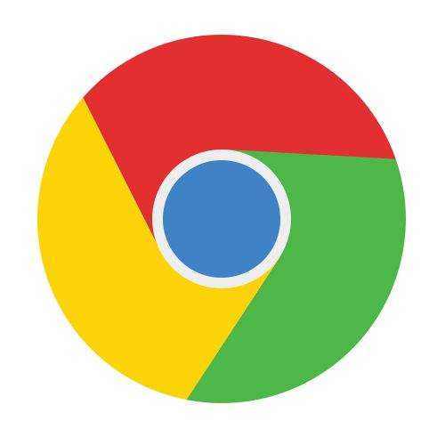

<!DOCTYPE html>
<html lang="en">
<head>
    <meta charset="UTF-8">
    <title>判断浏览器</title>
</head>
<body>
<script type="text/javascript">
    (function (window) {
        var win = window,
            sys = {},
            ua = navigator.userAgent.toLowerCase();
        (/msie\s+(\d+)/.test(ua)) ? sys.ie = RegExp.$1 :
            (/firefox\/(\d+)/.test(ua)) ? sys.firefox = RegExp.$1 :
                (/chrome\/(\d+)/.test(ua)) ? sys.chrome = RegExp.$1 :
                    (/opera.(\d+)/.test(ua)) ? sys.opera = RegExp.$1 :
                        (/version\/(\d+).*safari/.test(ua)) ? sys.safari = RegExp.$1 : 0;
        // if (sys.ie && sys.ie < 11) {
        if (sys.ie) {
            // 浏览器版本过低
            var divDOM = document.createElement("div");
            divDOM.id = "alert_browser";
            divDOM.innerHTML = "<p style='z-index:999999;font-family:Georgia,Serif;width:100%;height:50px;line-height:50px;font-size:14px;margin:0;padding:0;" +
                "text-align:center;position:absolute;left:0;top:0;" +
                "background-color:#FAFAD2;border-bottom: 1px solid #DCDCDC'>系统检测您的浏览器为IE浏览器，请更换您的浏览器&nbsp;&nbsp;" +
                // 浏览器下载图标全部在这里
                "<a target='_blank' href='http://chrome.360.cn/' style='margin:0 10px;'></a>" +
                "<a target='_blank' href='http://dl.pconline.com.cn/download/51614-1.html' style='margin:0 10px;'></a>" +
               "<p>";
            document.body.appendChild(divDOM)
        }
    })(window)
</script>
</body>
</html>